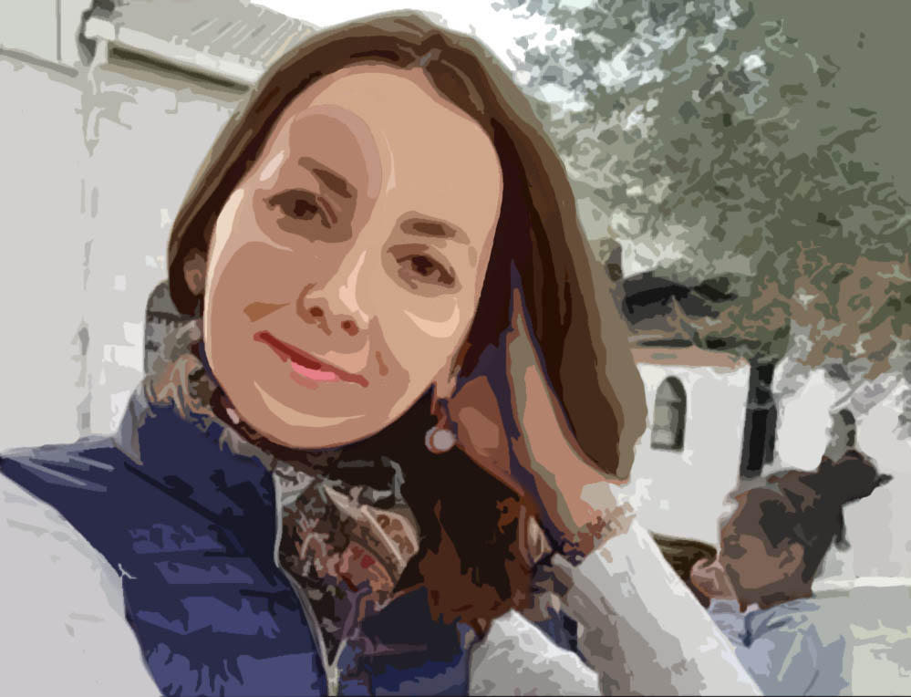
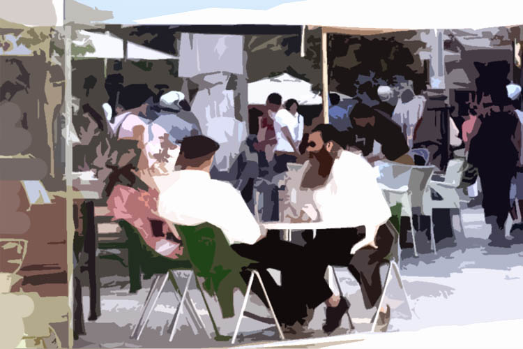
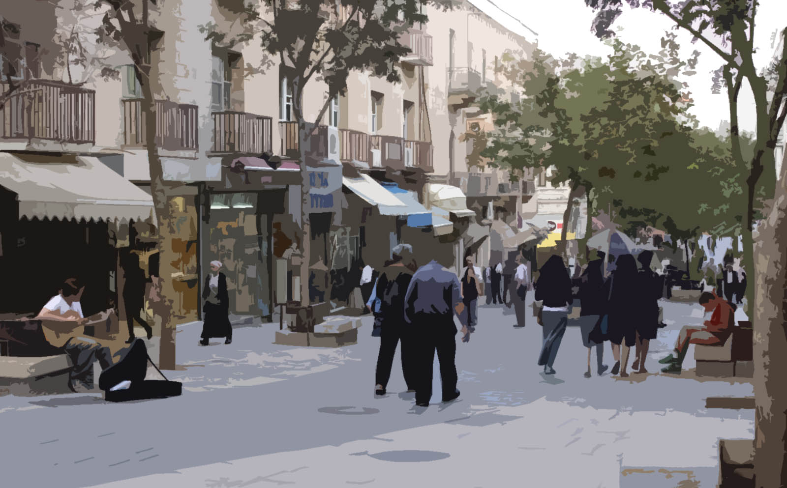

Стоило бросить все, чтобы работать продавцом?
С такой школой жизни для меня больше нет ничего невозможного.

автор: Катя Саламандраисточник: shakshuka.ru
— Он хочет пять? Отлично. Продай ему десять! Будь по-наглее, Катя, в Израиле без этого никак.
Рои, управляющий небольшим магазином косметики в Иерусалиме, энергично распаковывал огромные коробки с мылом, параллельно объясняя мне тонкости прямых продаж. Краткий курс счастливой жизни, — разумеется, по-израильски — тоже входил в эту обязательную программу. Мне было тридцать три года, я жила в стране шесть месяцев, и это была моя первая работа здесь.
Совсем недавно у меня была серьезная должность пресс-секретаря, просторный кабинет с красивым видом из окна, дом, семья и полное внешнее благополучие. А еще пустота внутри, одиночество, ощущение «потолка» в карьере, хроническая усталость и постоянная мысль, что я не там. Потом случился развод, который все расставил по местам: я поняла, что ехать в Израиль надо именно сейчас, получила у консула визу на ПМЖ, уволилась с работы, упаковала два чемодана и полетела в страну, которую до этого знала лишь как турист.
Мне повезло: вместе с двумя сотнями молодых репатриантов из разных уголков мира я попала на прекрасную образовательную программу, которая проходила в Иерусалиме. Веселая студенческая жизнь в кампусе, интенсивный курс иврита в ульпане, путешествия по стране — ощущение беззаботности и затянувшихся каникул закончилось вместе с выпускными экзаменами и корзиной абсорбции. Пришло время подтвердить свой диплом, распечатать резюме и начать искать работу.
«Без хорошего иврита на приличное место рассчитывать не стоит», — пугали меня репатрианты со стажем. Удивительно, но предложения и возможности были. Сложно было другое — сделать правильный выбор и понять, что же важно для меня на самом деле. Успешные пробы на русскоязычном ТВ-канале, удачное собеседование на место секретаря ювелирной фирмы в Тель-Авиве — интуитивно я чувствовала, что это совсем не то, чем я хочу здесь заниматься. Снова крутиться, как белка в колесе, жить в состоянии вечного стресса или погружаться в офисную рутину совсем не хотелось. Хотелось работу без напряжения и вечных авралов — без «лахаца», как любят говорить израильтяне, — которая даст стабильный доход, оставляя при этом свободной голову. А еще, наконец, заговорить на иврите и получше узнать свою новую родину.

Иерусалим, ул. Бен Ехуда
Потеря привычного статуса, классическая проблема новых репатриантов, волновала меня на тот момент меньше всего. Узнав, что в небольшом уютном магазине косметики ищут продавца, я решила: это то, что мне надо. Я отлично разбиралась в средствах по уходу за собой, за пару вечеров выучила весь ассортимент на полках и освоила кассу. На мой пятимесячный иврит закрыли глаза, сказав, что учить его я буду в процессе, а вот английский и немецкий оказались очень кстати: магазин находился на одной из самых оживленных улиц Иерусалима, и сюда частенько наведывались туристы.
Первый раз в жизни мне пришлось проходить испытательный срок. Лишь спустя месяц, подведя итоги успешных продаж, меня оформили на работу официально. «Какая ты молодец! — восхищались дружелюбные израильтяне. — Только что приехала, а уже неплохо говоришь на иврите и работаешь в таком красивом месте!» Те, кто остался в прежней жизни, недоумевали: неужели стоило бросить все и уехать в другую страну, чтобы работать там продавцом?
Я была уверена, что пробуду недолго, но незаметно втянулась и осталась на год.
Каждое утро я открывала двери магазина, и он учил меня жизни. Новой жизни в абсолютно незнакомых для меня условиях. Здесь был весь Израиль во всем его многообразии, и он не переставал меня удивлять. Мне дарили цветы и говорили много добрых слов, до умопомрачения торговались из-за нескольких шекелей и оставляли сумасшедшие чаевые, незаметно подкладывали еду, делали предложение руки и сердца и два раза украли телефон. Я исписала новыми словами на иврите три больших блокнота, сделала столько ошибок, что перестала их бояться, много улыбалась, училась гибкости, терпению, легкости и той самой хорошей наглости, которой мне всегда не хватало.

Иерусалим, ул. Бен Ехуда
Только сегодня я понимаю, насколько верное решение тогда приняла. Эта работа стала для меня тем самым бесценным опытом, который обязательно стоило пережить, начав с нуля в новой стране. Она подарила мне массу удивительных встреч и уникальных ситуаций. Именно здесь я заговорила на иврите, кажется, научилась понимать израильтян и по-настоящему полюбила свою новую родину.
Ведь магазин — это маленький Израиль. А Израиль для меня как человек. Невозможно полюбить без погружения — не узнав, не приняв, не прочувствовав. Думаю, что мне это удалось.
Сегодня я открыла свое дело и работаю копирайтером. Когда пишу рекламные тексты, с улыбкой вспоминаю мою первую работу в Израиле. Продать десять? Легко!
С такой школой жизни для меня больше нет ничего невозможного.